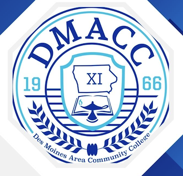

Class: CIS-515 - Full Stack Web Development
Name: Martin Medina
About This Portfolio
This website is my personal portfolio for CIS-515 - Full Stack Web Development. The purpose of this website is to provide one central location where I can showcase my projects, assignments, coursework, and the web development skills I am building throughout this course. Instead of keeping my work separated across different files and assignments, this website gives me a place to organize and present my progress as I continue learning about modern web development.
Throughout this course, I have been developing my understanding of HTML, CSS, responsive web design, website organization, and other technologies used to create modern websites. Building this portfolio has given me an opportunity to practice these skills by creating multiple pages and connecting them together with navigation. I have also worked on improving the visual appearance of the website by using CSS, layouts, typography, backgrounds, spacing, and responsive design techniques.
This portfolio also represents my learning journey as a Computer Information Systems student. Each assignment gives me an opportunity to apply concepts instead of only learning them from examples. By adding my projects and coursework to this website, I can see how my skills have developed over time and identify areas where I can continue improving. The website is also designed to demonstrate that I understand how different parts of a website work together, from the HTML structure and CSS styling to responsive layouts and navigation.
As I continue through the course, this website will grow with my experience. I plan to use it to demonstrate completed assignments, projects, and other examples of my work. My goal is for this portfolio to represent both what I have learned and the effort I have put into developing my technical skills. It provides a practical example of my progress in Full Stack Web Development and gives me a foundation that I can continue improving as I learn additional technologies.

Logo © Des Moines Area Community College